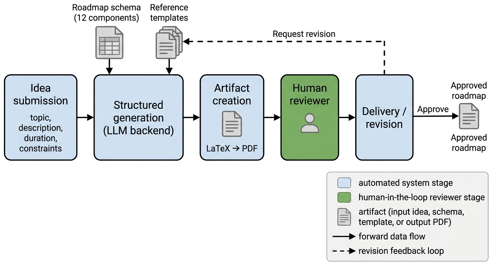
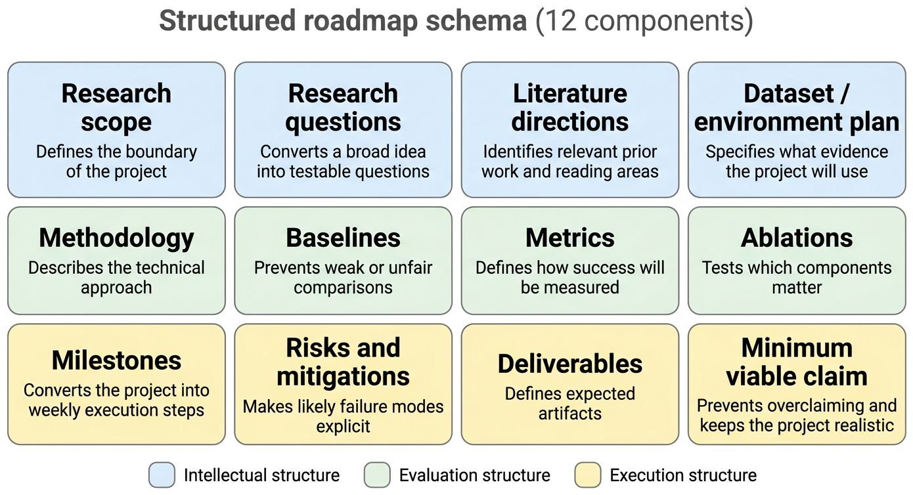
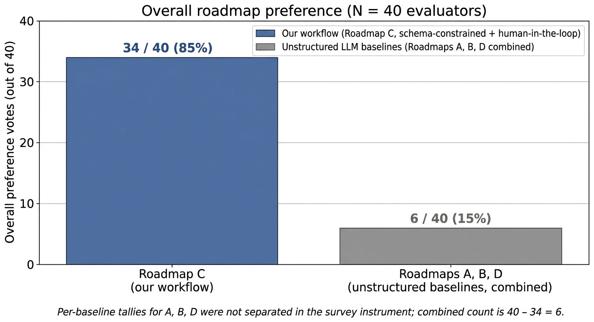

01
Workflow framing
We formulate research roadmap generation as a human-in-the-loop workflow rather than a one-shot generation task. The reviewer is treated as a first-class participant in the system, not as the prompt author.
Human-AI Collaboration · LLM Workflows · Research Planning
A workflow that converts a vague research idea into a structured, twelve-component roadmap, materializes it as a reviewable PDF, and routes it to a human reviewer who approves or requests revisions. In a four-way anonymized human preference study with N=40 evaluators, our schema-constrained variant was preferred over three unstructured ChatGPT baselines.
Early-stage research often begins with vague ideas that are not yet executable. While large language models can assist with research planning, unstructured prompting often produces roadmaps that are fluent but generic, difficult to verify, or poorly scoped. We present a human-in-the-loop LLM workflow for research roadmap curation that converts a raw research idea into a structured, reviewable artifact. The workflow is model-agnostic: it conditions on a twelve-component roadmap schema and reference templates, generates LaTeX source asynchronously, compiles a PDF, and routes the result to a human reviewer who may approve or request revisions. We evaluate the workflow with a human preference study in which 40 evaluators compared four anonymized roadmaps generated for the same research idea, three from unstructured LLM baselines and one from our workflow. Across the cohort, 34 of 40 evaluators (85%) selected the schema-constrained, human-reviewed roadmap as the strongest overall, with the remaining six votes split across the three baselines.
01
We formulate research roadmap generation as a human-in-the-loop workflow rather than a one-shot generation task. The reviewer is treated as a first-class participant in the system, not as the prompt author.
02
A structured schema decomposes early-stage research planning into intellectual, evaluation, and execution structure: questions, literature, datasets, methodology, baselines, metrics, ablations, milestones, risks, deliverables, and a minimum viable claim.
03
A four-way preference protocol compares roadmaps generated for the same idea by three unstructured general-purpose LLM baselines and our schema-constrained workflow, scored by N=40 evaluators across five quality dimensions.
Five stages, with explicit human approval before delivery.
01
A user submits a raw research idea and any optional constraints (duration, target output, available data or compute).
02
An LLM backend generates a roadmap using the fixed twelve-component schema and a small library of reference templates. Schema-constrained, not free-form.
03
The roadmap is converted into a reviewable artifact: in our prototype, a LaTeX source file that compiles to a PDF.
04
A reviewer (mentor, supervisor, instructor, or the researcher themselves) inspects the roadmap and either approves it or requests changes. Feasibility, novelty calibration, and scientific correctness sit on the human side.
05
If revisions are requested, the workflow regenerates or edits the roadmap using the reviewer's feedback. If approved, the roadmap is delivered. The job state machine supports queued, processing, completed, failed, revision-requested, and revision-processing states.


Evaluators consistently preferred the schema-constrained, human-reviewable roadmap.
Each of the 40 evaluators was shown four anonymized roadmaps (A, B, C, D), generated for the same research idea from the same input prompt. Three were produced by general-purpose LLM backends invoked with an unstructured planning prompt; one was produced by our schema-constrained, human-in-the-loop workflow. The label-to-system mapping was hidden. When asked to select the strongest roadmap overall, 34 of 40 evaluators (85%) selected our workflow's variant; the remaining 6 votes (15%) were distributed across the three unstructured baselines.
Under the null hypothesis that evaluators choose uniformly at random among the four roadmaps (chance probability 0.25 per variant), the probability of observing 34 or more votes for any single variant out of 40 is approximately 2.5 × 10−15 (binomial tail). The 95% Wilson confidence interval on the underlying preference proportion is [0.709, 0.929], so the lower bound stays well above chance even when accounting for sampling variability at N=40.

What it is. A practical workflow and protocol for early-stage research planning. Schema-constrained generation, reviewable artifacts, and explicit human approval combine to produce roadmaps that early-stage researchers and mentors recognize as more usable than fluent but unconstrained LLM output.
What it isn't. Autonomous research generation. We do not claim that an LLM can determine scientific truth or independently supervise research. We claim that an LLM, when constrained by a schema and placed inside a human review loop, can help produce better first-pass research plans. The reviewer remains responsible for feasibility, novelty calibration, and scientific correctness.
Reporting limitations we are explicit about. Per-dimension tallies (completeness, feasibility, specificity, experiment design, research potential) and per-baseline counts (A vs. B vs. D) were not separately aggregated for this report; the cohort skews toward early-stage researchers and bootcamp mentors. Long-term project outcomes (milestone completion, mentor intervention rate, final paper quality) are left to future work.
01
13-page PDF with the full workflow, evaluation protocol, and limitations.
02
GitHub repository with paper source, figures, references, and session state.
03
One Python snippet recomputes the binomial p-value and Wilson CI from the public counts.
04
BibTeX entry with one-click copy.
@misc{joshi2026roadmap,
title = {A Human-in-the-Loop LLM Workflow for Research Roadmap Curation},
author = {Joshi, Prathamesh and Abraar and Dwivedi, Naman and Dandekar, Raj and Dandekar, Rajat and Dandekar, Sreedath},
year = {2026},
note = {Preprint},
url = {https://github.com/Vizuara-AI-Lab/paper-research-roadmap-curation},
}